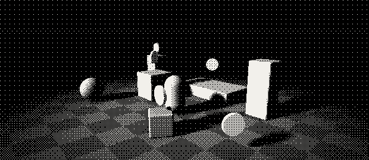
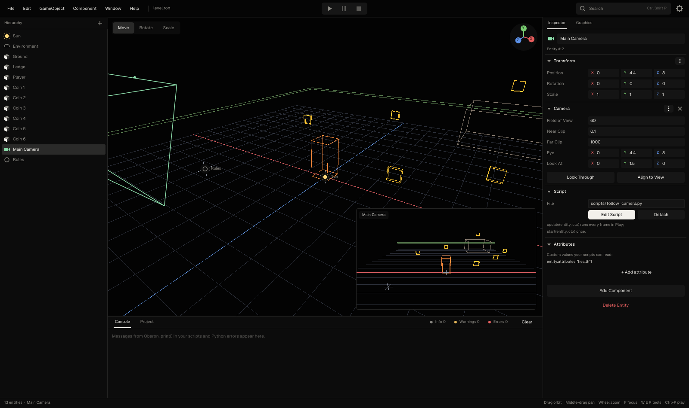
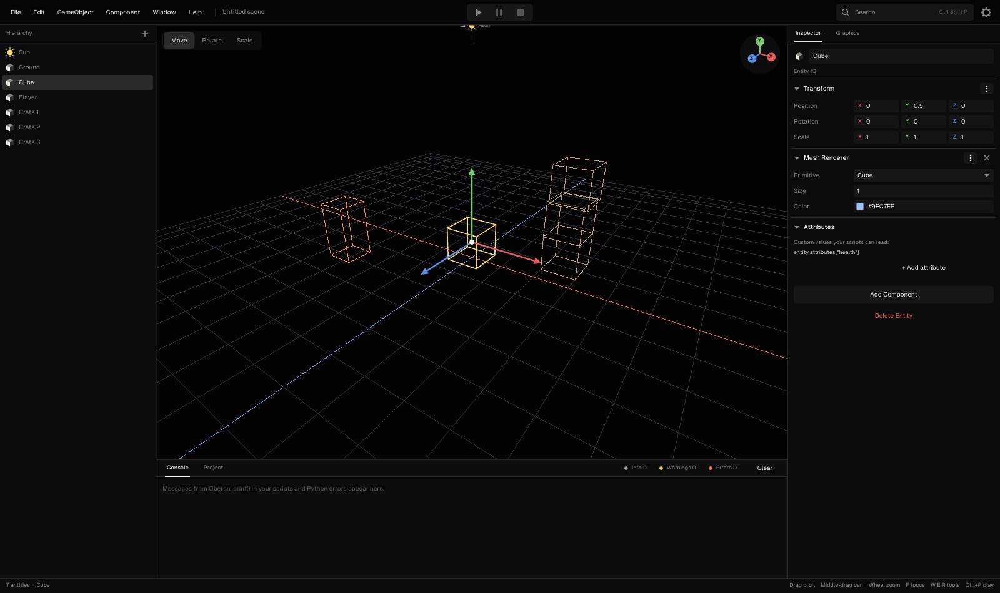

Build the world in Oberon. Write the game in Python.
AUTOMATA is a 2D and 3D game engine with a Rust core and a Python gameplay API. Its native editor, Oberon, lets you place things, light them, frame the shot, and press Play, all without leaving one window.

One window, from first cube to Play.
Hierarchy on the left, the scene in the middle, the Inspector and Graphics on the right. The selected camera draws its frustum and shows a live preview of what Play will render.

Oberon with the Coin Run tutorial level open.
Gameplay is a Python file.
Attach a script to anything. Oberon calls start once and
update every frame. Save while the game runs and it
reloads in under a second. If the script breaks, only that script
pauses, and the Console links straight to the line.
The same file ships. at.run_scene("level.ron")
runs the scene and its scripts in the real engine, with no editor
installed.
import math def start(entity, ctx): entity.state["home"] = entity.transform.position def update(entity, ctx): hx, hy, hz = entity.state["home"] t = ctx.time.elapsed entity.transform.rotation_euler = (0, t * 2.5, 0) player = ctx.scene["Player"].transform.position if math.dist(player, (hx, hy, hz)) < 1.1: entity.attributes["collected"] = True print(f"+{entity.attributes['value']}") # → Console
Cameras you can see.
Every camera draws its frustum in the scene. Select one and a live preview shows exactly what the player will see. Look Through jumps into the shot. Align to View puts the camera wherever you've navigated to.
- Play
- Renders through the scene camera, and movement follows its facing.
- Scripts
ctx.camera.follow(player),look_at,fov: a third-person camera in one line.- Undo
- Every edit is one step, including a whole gizmo drag.

Tune the frame, not a config file.
The Graphics tab collects the whole look in one place: sun angle, sky and ground ambient, tone mapping, exposure, and distance fog, with frame time reported live. One-click test scenes such as a colour chart, shadow pillars, a fog corridor, and a 400-cube stress field let you judge a change fairly, and they undo in one step.

Test the game like code.
Headless mode runs the full engine, with physics, scripts, and cameras, without a window or a GPU, as fast as the CPU allows. Your level becomes a pytest suite that runs in CI on every push.
From Oberon to Pythonimport automata as at def test_player_stands_on_the_ground(): heights = [] def after(ctx): heights.append(ctx.scene["Player"].transform.position[1]) at.run_scene("level.ron", headless=True, max_frames=120, update=after) assert 0.5 < heights[-1] < 1.5
Small, readable, yours.
No runtime fees, no project format you can't read. Scenes are plain RON text, the editor is Rust you can build in one command, and the engine is dual-licensed MIT / Apache-2.0.
- Core
- Rust, fixed-timestep loop
- Scene
- hecs ECS, events, resources
- Rendering
- wgpu: Vulkan, Metal, DX12
- Look
- Shadows, hemisphere ambient, fog, ACES / AgX
- Physics
- Rapier 2D and 3D, character controllers
- Audio
- Kira
- Scripting
- Python 3.10+ via PyO3
- Editor
- Oberon: native Rust, code editor with LSP
Ten minutes to your first scene.
git clone https://github.com/x017/automata && cd automata && cargo run -p oberon --release